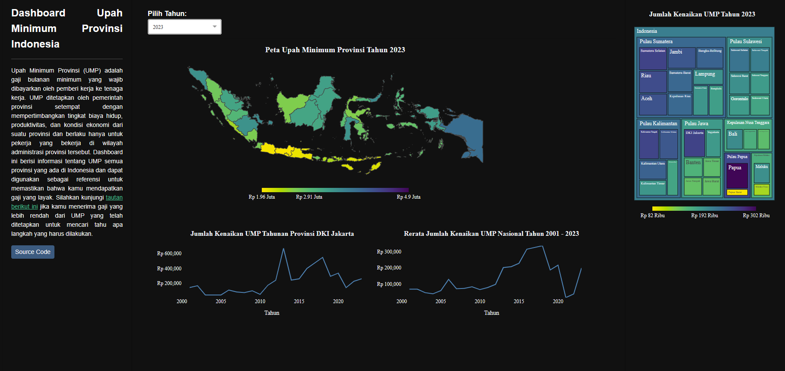

Indonesia Minimum Wage Dashboard
Published: 08.01.2023
I just finished building a dashboard that displays Indonesia’s minimum wage for each province. It took me a few days to complete, but I’m extremely pleased with the outcome. I used Plotly to build the dashboard, and I utilized data from Badan Pusat Statistik to ensure that the information was accurate and up-to-date. Best of all, I deployed the dashboard on Render and made all of the source code available on my GitHub page.

Initially, my goal was to create a user-friendly dashboard that would allow people to easily access information about minimum wage rates in their respective provinces. By displaying how much minimum wage rates have increased each year, I hope to encourage people to be aware of their rights and take action if they feel that they’re being underpaid. Everyone deserves to be paid fairly for the work that they do.
If you’re interested in learning more about minimum wage rates in Indonesia, check out my dashboard on this web. Thanks for reading, and I hope that this tool will be useful for you and many others!